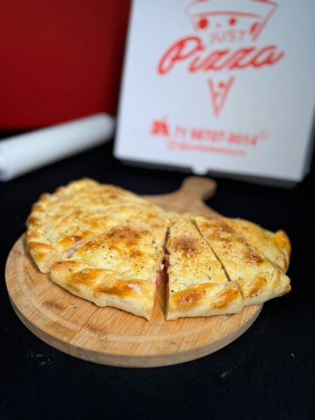
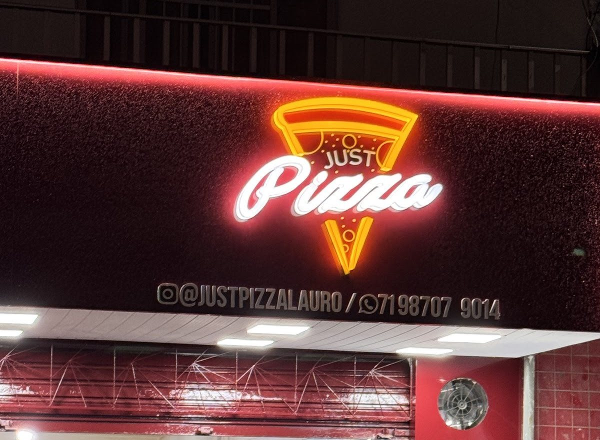
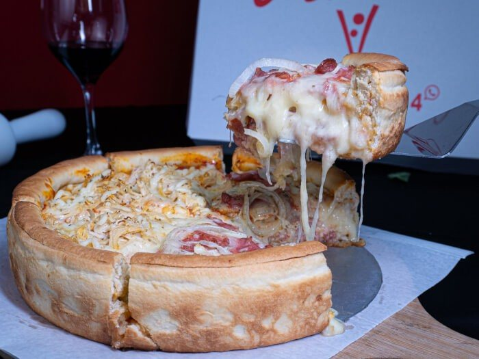
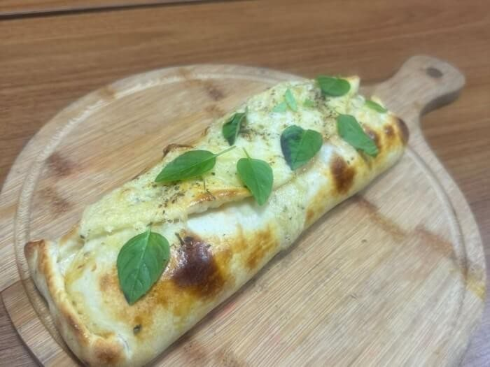
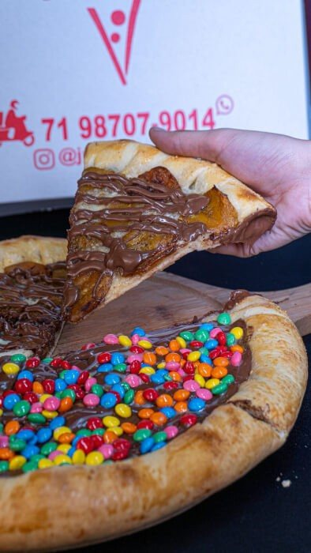
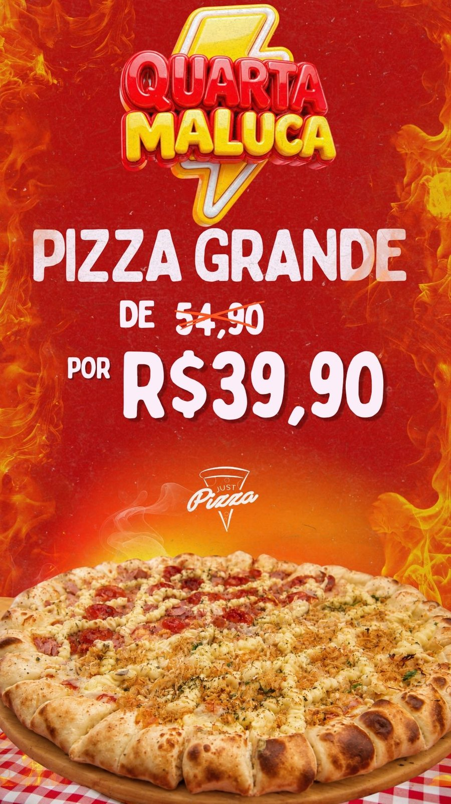
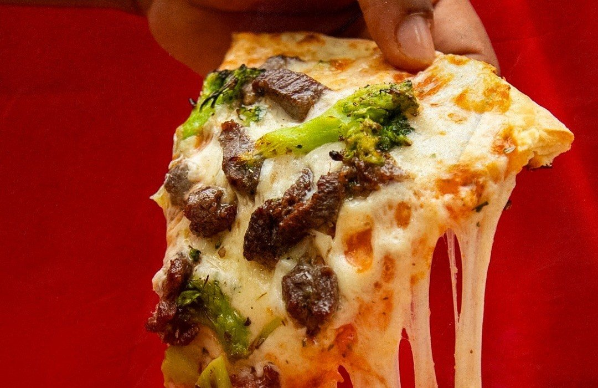

35 cm
Calzone grande 35 cm
24 sabores com preço próprio, do calabresa (R$ 64,90) ao camarazola (R$ 84,90).
Todos os dias até as 23h Itinga · Lauro de Freitas
Família de 12 fatias com até 3 sabores, a Stuffed com mais de 1 kg de recheio, calzone de 35 cm e pizza de rolo. Delivery para 29 bairros de Lauro, Salvador e Camaçari, ou retirada no balcão.


Por onde começar
Família com até 3 sabores, grande e média com até 2. A conta aparece na hora.
Montar agoraCardápioCombos, Stuffed, 24 calzones, pizzas doces e bebidas, com busca.
Abrir o cardápioStuffedA G passa de 1 kg de recheio; a P, de 600 g. Massa fresca e crocante.
Conhecer a StuffedEntrega29 bairros com taxa publicada, de R$ 7 a R$ 16. Ou retire no balcão.
Ver bairrosAs medidas da Just
“Temos pizzas de diversos tamanhos e formatos”, diz a própria Just. Cada uma com o preço publicado na loja on-line.
A assinatura da casa
“Uma pizza extremamente bem recheada, com uma massa bem crocante, produzida com massa fresca. Conhecida como pizza de 1 KG.”Cardápio da Just Pizza
A G aceita até 2 sabores, de calabresa com cebolas roxas a camarão ao molho pesto. A P é indicada para até 2 pessoas e vai até no Trio da Just.
Sabores e preços da StuffedAlém do disco

24 sabores com preço próprio, do calabresa (R$ 64,90) ao camarazola (R$ 84,90).

“Pizza com massa rica enrolada com muito recheio.” R$ 29,90, com sabores salgados e doces.

Média com até 2 sabores: churrus, Romeu e Julieta, brigadeiro, disquete e mais. R$ 44,90.
Monte seu pedido
Sem comissão de aplicativo: o pedido sai do site direto para o WhatsApp da Just, com tamanho, sabores, borda e o total estimado.
1 Tamanho
2 Sabores
3 Borda
Pizza na sacola. Abra a sacola embaixo para mandar pelo WhatsApp.
Total estimado: preço do tamanho + acréscimo de cada sabor especial + borda, como na loja on-line. A Just confirma o valor e a taxa de entrega no WhatsApp.
Quarta e cashback

“Na Quarta Maluca da Just, pizza grande sai por apenas R$39,90!”Instagram da Just, 22/09/2026Como funciona

“Na Just, você recebe 5% do valor da sua compra de volta em cashback… Seu saldo fica disponível por 45 dias.”Instagram da Just, 30/09/2026Ver as regras
Entrega
Digite o bairro. As taxas são as publicadas pela Just na loja on-line, de R$ 7 em Itinga e Caji a R$ 16 em Piatã e Abrantes.
Retirada no balcão: Rua Arsênio F. dos Santos, 36 · Jardim Centenário, Itinga · Lauro de Freitas, ao lado do mercado Cesta Básica.
Esse bairro não está na lista publicada. Pergunte pelo WhatsApp: a Just responde se entrega aí.
Quem já pediu
Experiência maravilhosa, já começa sendo bom no atendimento inicial, eles entregam dentro do tempo estimado, o entregador também foi ótimo, zero defeitos. O sabor da pizza então nem se fala.
Simplesmente fora do comum! Que pizza! Que sabor! Certeza que voltaremos!
Sempre fui bem atendida e amo as pizzas, continue com essa qualidade.
Pizza muitíssimo saborosa, pedi pela 99pop e ganhei uma experiência muito agradável, ingredientes de qualidade e um ótimo sabor! Continuem assim.
Pedi o delivery e foi ótimo o custo beneficio para dividir com os amigos.
Trechos de avaliações da ficha da Just Pizza Lauro no Google, lidos em 06/10/2026. Nomes abreviados.
Galeria
Dúvidas frequentes
A Just publica 29 bairros com taxa: 19 em Lauro de Freitas, 8 em Salvador (de Jardim das Margaridas a Piatã) e 2 em Camaçari (Busca Vida e Abrantes). A taxa vai de R$ 7 a R$ 16. Se o seu não aparece, pergunte pelo WhatsApp.
De segunda a sexta, das 18h às 23h; sábado e domingo, das 17h às 23h. Fora desse horário, a loja on-line aceita pedido agendado.
Sim. A Just faz entrega e retirada, na Rua Arsênio F. dos Santos, 36 · Jardim Centenário, Itinga · Lauro de Freitas, ao lado do mercado Cesta Básica.
Família: até 3. Grande e média: até 2. Stuffed G: até 2. Stuffed P e calzone: 1 sabor.
Na loja on-line da Just: dinheiro, cartão de débito e de crédito, Pix e pagamento on-line. Confirme a forma ao fechar o pedido.
Segundo a Just, 5% do valor de cada compra volta como cashback, e o saldo fica disponível por 45 dias.
Peça a sua
Todos os dias até as 23h. Monte o pedido aqui ou chame a Just no WhatsApp (71) 98707-9014.